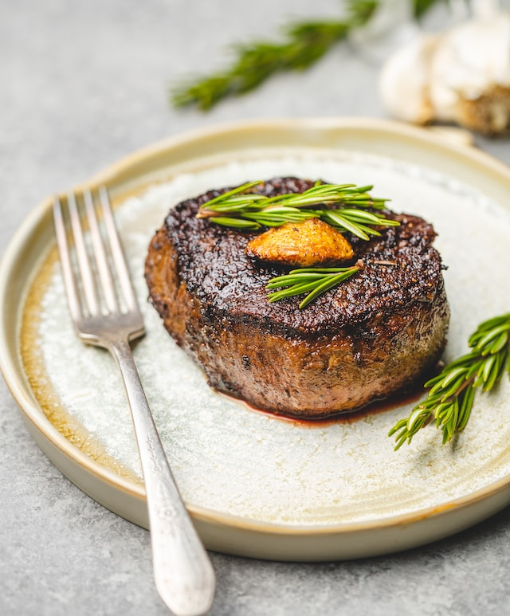

Perfecting a steak is a culinary art that requires attention to detail and a deep understanding of cooking techniques. It begins with selecting a high-quality cut of beef, like a well-marbled ribeye or a tender filet mignon. Before cooking, allow the steak to come to room temperature and generously season it with salt and freshly ground black pepper, enhancing its natural flavors. Preheat a grill or skillet to high heat, ensuring it's scorching hot. Sear the steak for a few minutes on each side to achieve a beautiful caramelized crust while maintaining a juicy interior. To determine the desired doneness, use a meat thermometer – 125°F (52°C) for rare, 135°F (57°C) for medium-rare, 145°F (63°C) for medium, and so forth. Let the steak rest for a few minutes after cooking to allow the juices to redistribute, resulting in a tender, mouthwatering masterpiece. Top it with a pat of herb-infused butter for an extra touch of indulgence, and you'll have a perfectly perfected steak that's sure to satisfy even the most discerning palate.